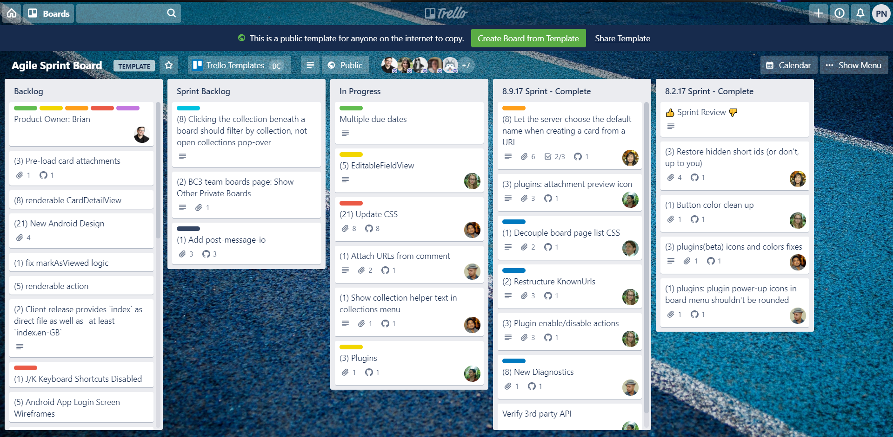

Trello is a helpful web based or application based tool that allows the users to
organize teams,tasks, and objectives.
Trello is a web-based Kanban-style list making application. It was created by Fog Creek
Software in 2011, and then later sold to Atlassian in January 2017, which is now based
in New York City.
Users of Trello can create "Tasks board", with several columns and the users are allowed
to move their tasks between the columns. Majortity of the time columns are ususally
labeld, "To Do", "In Progress", and "Done". This tool can be used for either personal or
business use (see Figure 1). The application is free to use, however Trello does offer
more options under their paid services; which will allow you do add more people and do
more with their application.Figure 1: Trello Example Board

Typically Trello is used for, students organizing project teams, real estate management,
software project management, lesson planning, and many more. With the addiiton of
plentiful API including email-in capability, integration with enterprise systems, and
cloud-based integration services, this makes project management easier to handle using
this tool.